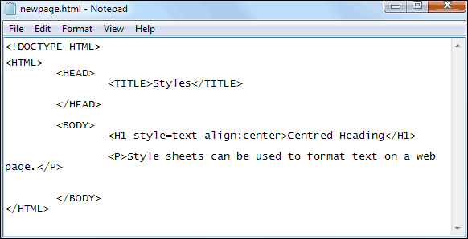
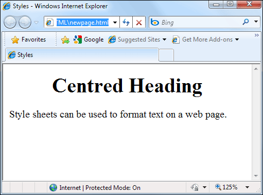
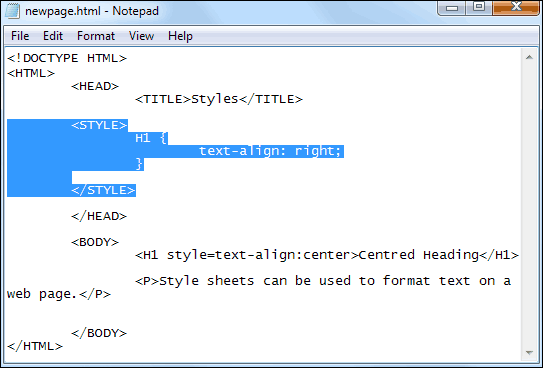
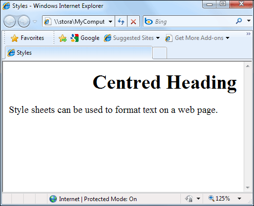

Inline and Embedded Styles
Inline Styles
Open up the HTML template text file you created at the start of the course. Click File > Save As in Notepad. Save the file with the name newpage.html. Don’t forget to change the Save as type box to All Files before clicking the Save button, if you're using Windows.
Add some text for the TITLE tag. Add an H1 heading, with some text between the two H1 tags. Now add a paragraph of text below the H1 heading. To create an Inline Style, click after the first H1. Tap the space bar on your keyboard. Type the following:
<H1 style=text-align:center>
Make sure there is no space after the colon and before the word “center”.
Your HTML code should look something like ours below:

(One thing British English users should note is the two different spelling of the word “centre”. American English is used in HTML, so it’s “er” rather than “re”.)
When you have finished typing the code, view the results in your browser. You should see that the heading is centred on your page:

So if you want to centre things on a page, you need to use the text-align property. After a colon, you add the value. In this case center.
(In previous versions of HTML you could use the HTML tags <CENTER> to centre things on a page. However, in the new version of HTML, version 5, this tag is now withdrawn (deprecated).
Exercise
As well as using center after the text-align: property you can use the following: left, right. Try them out for yourself. Simply replace the word center with one of the other text-align options.
Embedded Styles
As was mentioned, Embedded Styles go in the HEAD section of your code. To try them out, add the following highlighted CSS to your code:

So the text alignment we’ve added is to align right. However, the Inline Style is for centre alignment. So which one gets executed?
Save your work and refresh your browser page. You won’t see any changes. That’s because the Inline Style will override the embedded one in the HEAD section.
Delete the Inline Style for the H1 heading. You should then just have this for the H1 heading:
<H1>Centred Heading</H1>
Save your work and refresh the web page in your browser. It should look like this, now:

The heading is right-aligned.
Exercise
Change the value of the text-align property to Center. Save your work and Refresh the page in your browser.
In the next lesson, you'll learn about how to handle fonts with CSS.